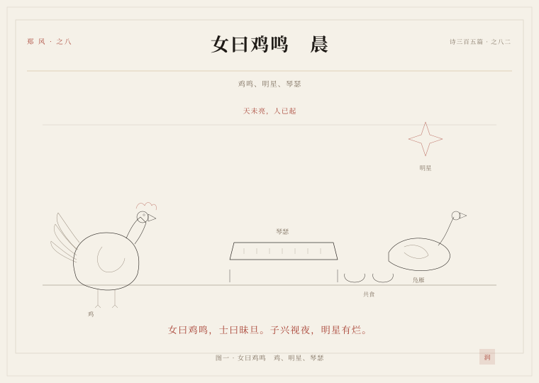
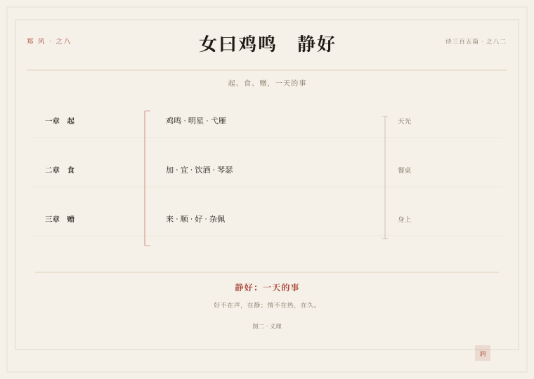

第八十二篇 女曰鸡鸣
郑风 · 之八 SJ082
朗读 · 普通话
依经文原文朗读，章次不读出；配古琴底乐，不改速、不加拖腔。全库同一音色（豆包 TTS），非播音员录制。
一 解题
诗三判：
- 谁在说：一对夫妻，天亮前后的一问一答。妻子说鸡叫了，丈夫说天还没亮；丈夫起来看星，然后去射凫雁；回来做菜、饮酒、弹琴；最后妻子把杂佩赠给他。全诗有三个人称，其实只有两个人。
- 说什么事：一章写“起”，二章写“食”，三章写“赠”。起是鸡鸣，食是弋雁，赠是杂佩；从天色到餐桌，从餐桌到身上。
没有一句“我爱你”，却有“与子偕老”“莫不静好”。
- 为何编在此：郑风之八。081 写“留不住”，082
写“留得住”。一条大路上拉不住的手，在一间屋里被琴瑟接住。
《毛序》：“《女曰鸡鸣》，刺不说德也。陈古义以刺今，不说德而好色也。”
朱子《诗集传》：“赋也。鸡鸣，天将明也。昧旦，天欲旦、晦明未辨之际也。明星，启明之星先日而出者也。弋，缴射，谓以生丝系矢而射也。凫，水鸟。雁，鸟名。加，中也。宜，和其所宜也。偕老，言其同老也。琴瑟在御，莫不静好，言其相乐也。来，谓迎来之。顺，谓顺其意。好，谓好之。杂佩，佩玉也。问，遗也。报，答也。○此诗言其相说之厚，而不失其正，故其言如此。”
本库的看法：《女曰鸡鸣》是一首把“好”写成“一天”的诗。
鸡鸣而起，弋雁而食，饮酒而琴，赠佩而报；每一件事都不大，合起来就是“静好”。
毛序说“刺不说德”，朱子说“相说之厚而不失其正”；一个说“今人不好德”，一个说“古人好得正”。
两说其实是一件事的两面：把古人的一天摆出来，今人的“好色”就短了。
先辨五事：“昧旦”是天将亮未亮，不是“昧旦”两个字分开解；“明星”是启明，不是满天星；“弋”是系丝射鸟，不是“弋取”；“加”是射中，不是“加上”；“御”是弹奏，不是“驾驭”。
二 经文
第一章
女曰鸡鸣，士曰昧旦。
子兴视夜，明星有烂。
将翱将翔，弋凫与雁。
第二章
弋言加之，与子宜之。
宜言饮酒，与子偕老。
琴瑟在御，莫不静好。
第三章
知子之来之，杂佩以赠之。
知子之顺之，杂佩以问之。
知子之好之，杂佩以报之。
分章：三章，章六句。
三 韵读
- 一章：旦、烂、雁，元部；“鸣”起句，可不入韵。
- 二章：加、宜，歌部；老、好，幽部；转韵。
- 三章：来、赠，之蒸通押；顺、问，文部；好、报，幽部。
读法：一章元部，天光一样放开；二章歌转幽，像从餐桌转到琴边；三章之、文、幽三转，像赠佩的三次动作。韵在换，事在接；一天没有断。
四 字义与名物
- 鸡鸣：天将明。昧旦：天欲旦而未辨之时。
- 子兴视夜：你起来看看夜色。明星有烂：启明星灿烂。
- 将翱将翔：将起行，如鸟将飞；不是真飞。
- 弋：以生丝系矢而射。凫：水鸟。雁：雁。
- 弋言加之：射而中之。宜：和其所宜，调治为肴。
- 宜言饮酒：把射得的鸟做成菜，饮酒。偕老：同老。
- 琴瑟在御：琴瑟在侧，弹而和之。静好：安静和好。
- 来：迎来、勤来；一说“来”为“劳来”。顺：顺其意。好：好之。
- 杂佩：杂玉之佩。赠：赠。问：遗、赠。报：答。
五 今译
妻子说：鸡叫了。丈夫说：天还没亮。你起来看看夜色，启明星亮闪闪。将要起身，去射凫雁。
射中了，给你做成菜。做成菜，一起饮酒，和你偕老。琴瑟在旁，没有一样不安静和好。
知道你对我殷勤，把杂佩赠给你。知道你顺我的心，把杂佩送给你。知道你喜欢我，把杂佩报答你。
六 章旨
- 一章：写“起”。鸡鸣、昧旦、明星、弋雁；天未亮，人已起。
- 二章：写“食”。加、宜、饮酒、偕老、琴瑟；从一口菜到一张琴，日子有了声音。
- 三章：写“赠”。来、顺、好，赠、问、报；三次赠佩，是把“知道”说成“答谢”。
总收：好不在声，在静；情不在热，在久。
全诗最重的两个字是“静好”，不是“偕老”；偕老是一句愿，静好是一天的事。
七 诗教
- 兴：以鸡鸣起兴。天光是一天的起头，鸡鸣是夫妻的起头；起头不慌，一天才稳。
- 观：观“好”的样子。不是鲜花、不是誓言，是射雁、做菜、弹琴、赠佩；好是日常，不是场面。
- 群：夫妻各尽其分：一个起，一个视夜；一个射，一个宜；一个弹，一个赠。分不是隔，是接。
- 怨：诗里无怨。毛序的“刺”在诗外：今人好色而不说德，古人好德而不失其好。
八 分寸与边界
- 不可把“昧旦”当“昧旦”二字字面解。它是天欲旦未旦；一拆字，天就黑了。
- 不可把“明星”当满天星。它是启明一颗；满天星是夜，一颗星是晓。
- 不可把“弋”当“射”。弋是系丝射鸟；一读成普通射箭，后面的“加”就没着落。
- 不可把“静好”当“安静”。它是琴瑟相和、日子相安；一读成无声，诗就死了。
- 不可把“赠、问、报”当三次一样的送礼。赠是始，问是遗，报是答；三次有次第。
九 存疑
- 诗旨：毛序“刺不说德，陈古义以刺今”；朱子“相说之厚而不失其正”。一刺一美，本库两存，以“美古以刺今”读。
- “来”：朱子“迎来之”；一说“勤来”“劳来”。从“迎来”，与“赠”相应。
- “顺”：朱子“顺其意”；一说“顺”为“和顺”。两读相近。
- “问”：朱子“遗也”；一说“问”为“问讯”。从“遗”，才与“赠、报”成列。
- “弋”：毛传“缴射”；一说“弋”为“取”。从缴射，才见“生丝系矢”的古法。
十 跨典
- 《礼记·昏义》：“共牢而食，合卺而酳。”——夫妻共食，是“宜”的礼底。
- 《论语·阳货》：“诗可以兴，可以观，可以群，可以怨。”——此诗可观“静好”，可群“各尽其分”。
- 《孟子·梁惠王上》：“老吾老，以及人之老。”——“偕老”不是一句情话，是一种秩序。
- 《诗本音》：三章韵读，旦、烂、雁元部，加、宜歌部，老、好幽部，来、赠之蒸，顺、问文部，见卷三。
十一 双卡与图
双卡八对：
| 昧旦（天欲旦未旦） |
昧旦（天已亮） |
| 明星（启明一颗） |
明星（满天星） |
| 弋（系丝射鸟） |
弋（普通射箭） |
| 加（射中） |
加（加上） |
| 宜（调治为肴） |
宜（适宜） |
| 御（弹奏） |
御（驾驭） |
| 静好（琴瑟相和） |
静好（安静无声） |
| 问（遗、赠） |
问（问讯） |

图一 · 女曰鸡鸣 鸡、明星、琴瑟

图二 · 女曰鸡鸣 起、食、赠
读图三处：
- 鸡在左下：图一左下一只鸡，右上一点启明，中间一张琴、一只雁。天未亮，物先亮。
- 不画脸：图一不画夫妻的脸，只画两只手：一只手推门，一只手按琴。“静好”不在表情，在动作。
- 三佩一列：图一右下三条杂佩，长短不一；赠、问、报，是三次，不是三份一样的礼。